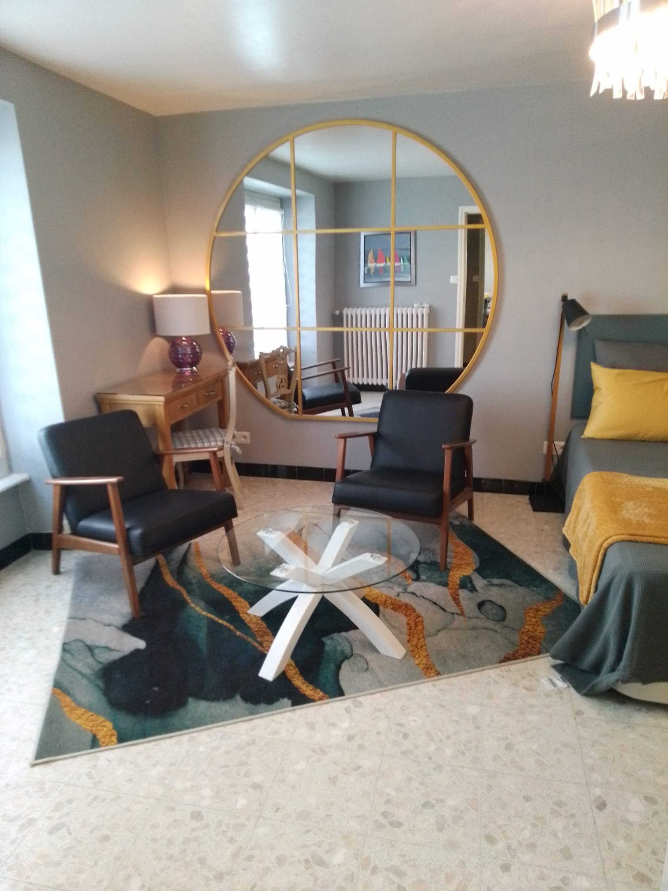
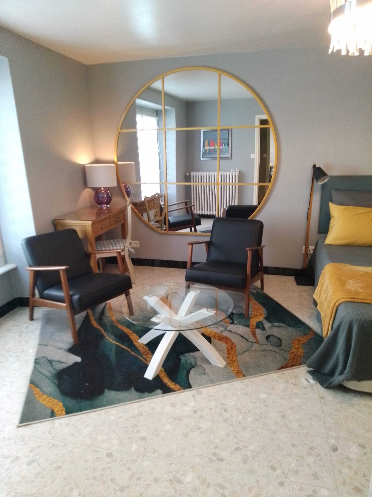

Morgat France
English

English
3 rue du Cap de la chèvre, Morgat, 29160 Crozon, Bretagne, France

 

La maison est située à quelques mètres de la belle plage de Morgat et proche du centre nautique.
Elle se trouve au centre du village, parfait pour s'intégrer à la vie locale.
Vous trouverez plusieurs restaurants, bars et magasins à quelques pas de là ainsi qu'une boulangerie/pâtisserie, une poissonnerie et un mini supermarché.
Il y a trois appartements indépendants.